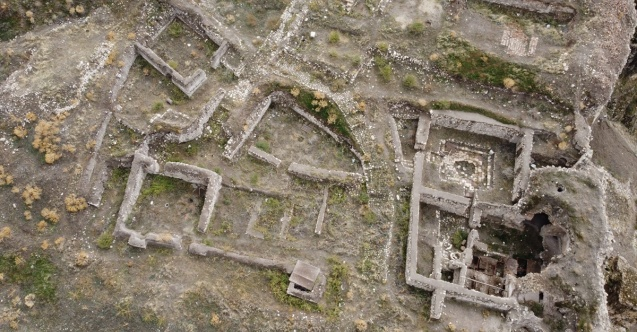

Kemah’ta yerleşme tarihinin başlangıcını ve Kemah Kalesi yapılış zamanını kesin olarak belirleyen herhangi bir kaynak bulunmamaktadır. Ancak yapılan tarihi araştırmalarda, Kemah’ın da üzerinde yer aldığı bölge tarihinin Paleolitik Çağ’a (yontma taş devri) gidebileceği vurgulanmıştır. Bunun yanında, doğudaki Erzincan ovası ile Erzurum’da yapılan kazılardaki arkeolojik bulgular, bölge tarihinin M.Ö. 4000-3000 yıllarına kadar dayandığını gösterir.
Asur ve Hititler’e ait çivi yazılı kaynaklarda Kemah, M.Ö. 2000’li yıllarda Doğu Anadolu’da kurulmakta olan küçük feodal beyliklerden biridir. M.Ö. 15. yüzyılda Hitit kökenli kaynaklarda Kemah’tan Kumaha olarak bahsedilmekte, ve Hititler’in Hayaşalar üzerine Kemah kalesi için seferler yaptığını belirtmektedir. Bu bilgilerden Kemah’ta yerleşme tarihinin günümüzden en az 4000 yıl önce başlamış olabileceği sonucunu çıkarmamız mümkündür. Hayaşalar’dan sonra, Bizanslılar dönemine kadar Kemah’ta Urartular, İskit ve Kimmerler, Medler, Persler, Partlar (İranlılar), ve Romalıların yaşadığı kaynaklardan anlaşılmaktadır. Roma İmparatorluğunun parçalanmasından sonra Kemah, M.S. 10. yüzyıla kadar Arsak Devletinin önemli şehirlerinden biridir. Ani ismiyle anılan Kemah, aynı zamanda kutsal şehir özelliğindedir. Zamanla şehir Camacha (Kamaçha-Ani) adını almıştır. Kemah, 379-678 arasında kalan devrede Bizanslıların egemenliğinde kalmıştır. Bu dönemde Kemah’tan yazılı kaynaklar Theodosiopolis olarak bahseder. İslâmiyet’in ortaya çıkışından bir müddet sonra bölge Arapların akınlarına maruz kalmıştır. Kemah Türklerin egemenliğine girinceye kadar, Araplar ve Bizanslılar arasında birkaç defa el değiştirmiştir. Bu tarihlerdeki Kemah, Arap kaynaklarında Kamah, Kemh ve Kamh şeklinde geçmektedir.
Anadolu’ya ilk Türk akınları, Hun Türklerinin 4. yüzyılın başlarında Derbent ve Daryol geçitlerinden Doğu Anadolu’ya girmeleri ile başlamıştır. Malazgirt Zaferinden (1071) kısa bir süre sonra ise Kemah Türklerin eline geçmiştir. Alparslan, Malazgirt Zaferinin ardından Orta ve Doğu Anadolu’nun çeşitli kesimlerine komutanlar gönderirken, ErzincanKemah ġarkîkarahisar (ġebinkarahisar) çevresini Emir Mengücek Gâzi’ye iktâ* ederek bu bölgelerin fethedilmesini emretmiştir. Bunun üzerine Kemah-Erzincan bölgesini fetheden Emir Ahmet Mengücek Gâzi Mengücek Beyliğini kurarak (1072-1114) korunaklı ve sağlam bir kaleye sahip olması dolayısıyla Kemah’ı merkez yapmıştır. Dolayısıyla doğal süreçlerin ortaya çıkardığı Kemah Kalesi , Türk hakimiyetinden önce olduğu gibi Türklerin Anadolu’ya gelmeleri ile birlikte yine çok tercih edilen stratejik askeri bir mevki özelliğindedir.
Mengücek Beyliği sınırları içerisinde 1228 yılına kadar kalmış olan Kemah, bu tarihten sonra Anadolu Selçuklu Devleti’nin himayesine girmiştir. Kösedağ Savaşı (1243) ile birlikte Moğol istilâsına uğramış olan bölge, 1335 yılına kadar Selçuklu himayesindedir. Bu tarihten sonra 16. yüzyıl başlarına kadar Kemah Eretna Beyliği, Karakoyunlular ve Akkoyunlular gibi Türkmen topluluklar arasında sık sık el değiştirmiştir. Son olarak 1503 yılından itibaren Kemah ve çevresi Safevilerin eline geçmiştir. Anlaşılacağı gibi, Kemah savunma ve aynı zamanda kontrol özelliği yüksek olan Kemah Kale dolayısıyla çeşitli devletler, milletler ve hatta etnik gruplar arasında sık sık el değiştiren bir yerleşme durumundadır.
Siyasi coğrafyada statik olarak kabul edilen coğrafi mevki, yer şekilleri, iklim ve akarsular gibi doğal etkenlerin önemi, teknolojik gelişim sonucu jeopolitik ve jeostratejik anlamda büyük ölçüde azalmıştır. Kemah kalesi’nin 16. Yüzyıldan sonra öneminin azalması, Kemah’ı gerileme sürecine iten en önemli etkenlerden biridir. Osmanlı İmparatorluğu egemenliğine girdikten sonra idarî olarak bir sancak merkezi olan Kemah, aynı zamanda serhat şehri (sınır şehri) özelliğindedir. Sınır bölgesi olmanın yanında kaleye bağlı olarak bilhassa doğuya yapılacak seferlerde askerî bir üs durumundadır. İmparatorluğun sınırlarının genişlemesi ve Kemah kalesi’nin stratejik öneminin azalmasının bir sonucu olarak, 1566 yılından sonra sancak statüsünden çıkarılarak Erzincan’a bağlı bir kaza durumuna getirilmiştir. 16. yüzyıldan sonra idarî yapısındaki değişikliğin sonucu Kemah’a bağlı yerleşmelerin sayısında önemli ölçüde azalma olmuştur.
Nitekim 1892 yılında kazaya bağlı 4 nahiye ve 86 köy bulunmaktadır. Kemah Kalesi’nin dolayısıyla yerleşmenin öneminin azalmasında önemli etkenlerden biri de Anadolu’nun doğusunu batısına bağlayan yol hatlarının kuzeye kaymış olmasıdır. Askeri ve ticaret yollarının önemi kaybetmesi ve kara yolu ulaşım hattının Kemah’ın kuzeyinden geçmesi, ilçenin birkaç yüzyıldan beri sapa bir konumda kalmasına neden olmuştur. Cumhuriyet Orta mahalle olup, konumları ile ilgili bir kayda rastlanmamıştır. Yine 1516’da şehirde Müslüman ve Hıristiyan toplam 2591 kişi yaşamakta olup, nüfus 1530’da 3697’ye yükselmiş, ancak 1591’de 2556’ya kadar gerilemiştir. 1520 yılında Kemah kazı merkezinde bulunan 1146 kadar asker nüfus yerleşmenin gelişmesinde askeri önemini göstermektedir.